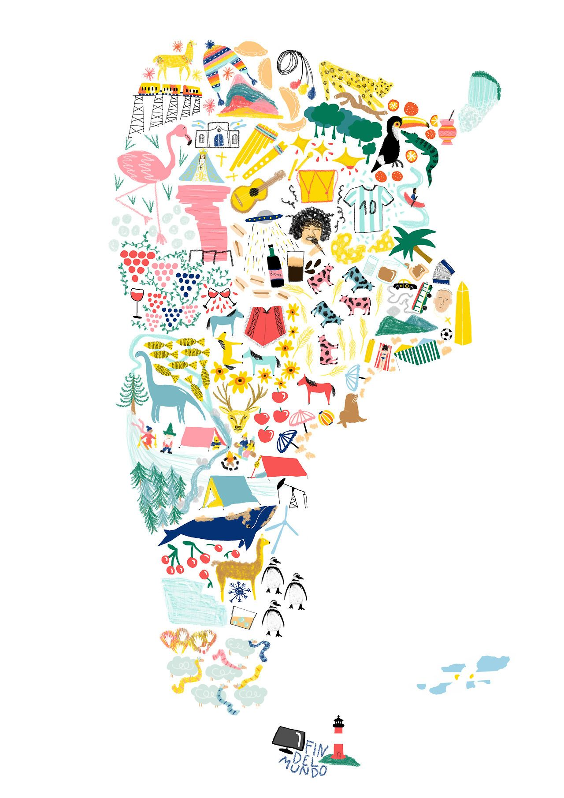
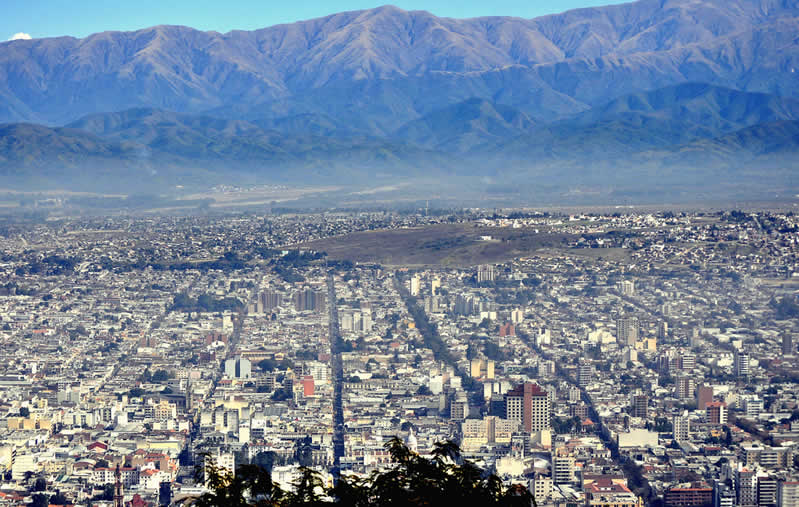
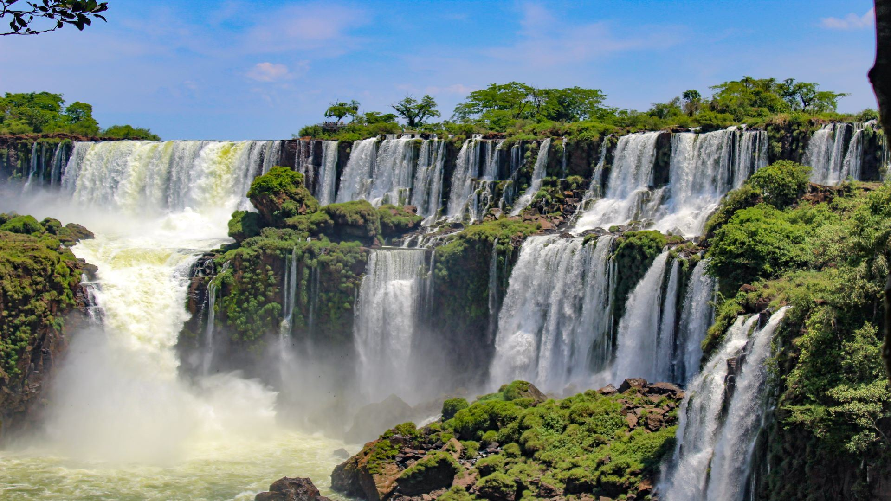

Los Mejores 5 Destinos de Argentina
Según datos del Ministerio de Turismo y Deportes hay, al menos, cinco destinos
nacionales que son los más elegidos por los turistas para vacacionar. Entre ellos se encuentran San Carlos de
Bariloche, Córdoba, Mendoza, Salta y la Ciudad Autónoma de Buenos Aires. A continuación, una lista con algunas
curiosidades de cada lugar.
Mendoza
Si te gusta el vino de calidad, Mendoza es tu lugar en el mundo.
Además de viñedos, Mendoza es famosa por su paisaje de montaña. Un recorrido que no deberías dejar de hacer desde la
ciudad es el Circuito de alta montaña, que te llevará hacia la Cordillera de los Andes pasando por paisajes como el
de las Termas de Cacheuta, ideal para hacer una parada y relajarse en sus piletones con vista a las montañas;
Potrerillos, con su embalse de agua turquesa; Uspallata, lugar considerado energético en el que se filmó la película
Siete años en el Tíbet; el Puente del Inca y su hotel termal abandonado bañado en los colores del agua cargada de
minerales; el Cerro Aconcagua, pico más alto del mundo fuera de los Himalayas, con 6962 metros de altura; hasta
llegar a Las Cuevas, punto desde el que se accede al Cristo Redentor que marca la frontera con Chile.
Circuito Chico: lo que tenés que saber sobre el recorrido más tradicional de Bariloche
Rodeado de montañas, bosque y a orillas del Lago Nahuel Huapi, Bariloche es un destino que te permite estar
haciendo una caminata en medio de la naturaleza durante el día, y esa misma noche salir de bares a tomar unas
cervezas artesanales. Aunque generalmente se la asocie con la nieve y los famosos centros de esquí, todas las
estaciones del año son buenas para viajar a Bariloche, ya que el verano y la primavera son ideales para hacer
trekkings.

circuito salta- cachi -cafayate
Para tener una vista de la ciudad desde lo alto, podés subir al Cerro San Bernardo, ya sea caminando (son unos 40
minutos aproximadamente) o con el teleférico.
Dejando la ciudad en dirección a Cachi, comienzan las razones que hacen que haya elegido este circuito como uno de
los mejores lugares para visitar en Argentina: la espectacular Cuesta del obispo se eleva hasta los 3400 metros de
altura por un camino tan zigzagueante como escénico. Antes de comenzar esta subida pasarás por el Parque Nacional
Los Cardones, en donde podés hacer una parada para recorrer alguno de sus senderos. Esta ruta conecta la ciudad de
Salta co
n los Valles Calchaquíes.
Cachi
El pequeño pueblo de Cachi está rodeado por montañas de más de 5000 metros de altura, y conserva en los alrededores
de la plaza central su estilo colonial, con construcciones pintadas totalmente de blanco para mantener una
uniformidad estética.
Cafayate
El centro más grande de los Valles Calchaquíes es famoso por su vino de altura, en especial la variedad torrontés,
un vino blanco dulce. Hay muchas bodegas en la que podés hacer una visita con degustación, y también podés probar su
famoso helado de vino, que según aseguran sus creadores, es el primero del mundo.
Saliendo de la ciudad volvemos a encontrarnos con las maravillas naturales.
La Quebrada de las conchas te acompañará por gran parte del recorrido hasta Salta, con varias paradas de camino en
formaciones naturales como Los castillos, el Mirador tres cruces, El anfiteatro y La garganta del diablo.

Cataratas del Iguazu
Una de las maravillas naturales del mundo, las imponentes Cataratas del Iguazú seguramente sean uno de esos
imborrables recuerdos que te lleves de Argentina. Caminando por las pasarelas, después de recorrer camino de selva
subtropical, llegarás hasta la gran estrella del recorrido: la Garganta del Diablo, un salto de 80 metros de alto y
150 de ancho que te hará vibrar las piernas y se asegurará de que te vayas mojado, por lo que es importante que
tengas especial cuidado con la tecnología que lleves.

Buenos Aires
Es el punto de entrada y el lugar por el que pasarás más de una vez durante tu viaje, y en el que probablemente
quieras quedarte un tiempo. Buenos Aires es una ciudad atrapante, con una enorme propuesta de actividades
culturales, vida nocturna y paseos para todos los gustos.
Cada barrio tiene su personalidad marcada, por lo que vas a necesitar varios días para poder recorrerlos.